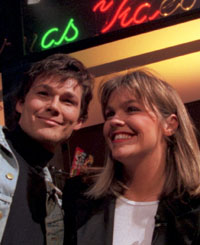

|
[Tidligere vinnere] [Den norske finalen] [Tilbake til hovedside] |
Eurovision Song Contest - Oslo 1996

Siste:
FInalebilettene revet bort
Fullt kjør med EuroSong
Harket og Bryn blir programledere
Grand-Prix nostalgi hver uke på NRK.I år arrangeres Eurovision Song Contest, tidligere Melodi Grand Prix, i Oslo Spektrum den 18. mai 1996. Norge er vertsland for finalen etter at Secret Garden vant finalen i Dublin i fjor med melodien "Nocturne". 34 land konkurrerer om å bli blant de 23 landene som får delta i finalen. Kun Norge, som vertsland, er garantert plass i finalen.
Billetter er i salg fra 1. februar, og det vil bli lagt ut totalt 20.000 billetter til tre forestillinger; to generalprøver og selve arrangementet.
Du kan også ta en titt på de offisielle sidene for finalen i Dublin 1995, eller du kan se hvor langt Sverige har kommet i forbredelsene.
Fakta om Melodi Grand Prix
Arrangeres i Oslo Spektrum lørdag 18.mai klokken 21.
Arrangementet koster rundt 40 millioner.
Arrangeres av NRK i samarbeid med EBU.
34 påmeldte land. 23 går videre etter en minifinale 21.-22.mars.
[Innhold] [Info] [Aftenposten hjemmeside] [Kultur/Underholdning hovedside]